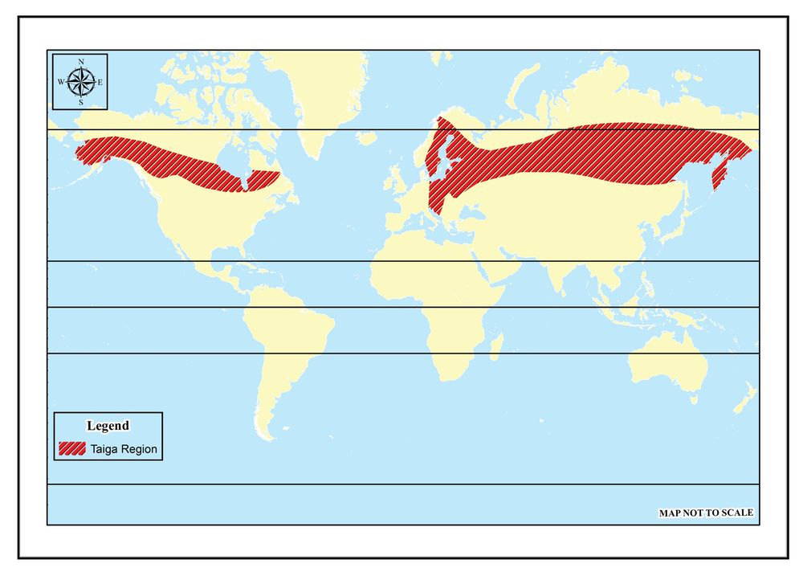
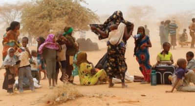
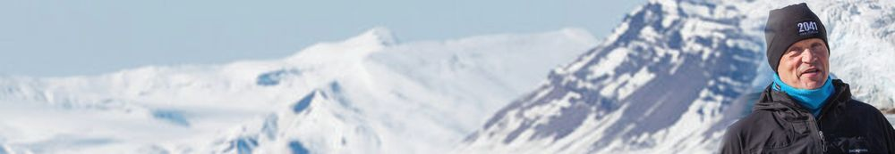

Climatic
Regions
and
2 Climate Change
I came to Canada for higher education and staying in the province of New
Brunswick, now it is the starting of cold season here. The maple trees have begun
to shed their leaves, heralding the arrival of winter. But the pine trees still remain
green. Winter begins here in mid-September. It peaks by the end of January and
gradually cools off to an end by April. The average temperature during this period
is -20˚C and can touch as low as -35˚C. The most difficult thing in winter is the
cold wind. There will be heavy snowfall during this time. 40 to 50 cm of snow
will accumulate. One has to wear multiple layers of clothing to survive winter
conditions. Without a jacket, gloves and footwear, it is a mess. Heaters are installed
in all houses and buildings. As the month of May begins, the temperature starts
to rise and by August it may reach up to 30˚ C. Daytime is hot and humid during
summer and sometimes it even rains. Thin clothes will suffice in winter.
Nikhil Shibu
Did you read the note?
Is the climate where Nikhil is residing, similar to ours? Analyse the writing
based on the weather elements given below.
Temperature
Precipitation
Wind
Page 36
Social Science II
Did you notice that New Brunswick, where Nikhil lives,
experiences severe winters and snowfall?
Is climate the same everywhere in the world? Some places
experience severe cold and snowfall, whereas it will be
extremely hot and arid elsewhere. There are also areas with
moderate temperature and humidity. Our earth is enriched
with such diverse climates. You have studied about weather
elements in the previous chapter.
Based on the fluctuations in elements of weather such as
temperature and precipitation, the world can be divided into
different climatic regions.
What is a climatic region?
A climatic region is an extensive geographical area in which
similar climate characteristics are observed.
Look at some of the major climatic regions of the world that
are given below.
Equatorial climatic region
Monsoon climatic region
Savanna climatic region
Hot deserts
Temperate grasslands
Mediterranean climatic region
Taiga region
Tundra region
Each climatic region has its own unique climate, and flora and
fauna developed according to it. Human life of the respective
climatic region is also moulded according to the geographical
features. Let’s delve deep into the characteristics of the major
climatic regions.
36
Part 1
Page 37
Figure fig_ch02_p037_01 (Page 37)
Climatic Regions and Climate Change
Equatorial climatic region
Look at the picture (Fig.2.1). It shows
the lifestyle of the pygmy tribe living
in the equatorial climatic region.
This climatic region extends up to
10˚ North and South of the equator.
Observe the map (Fig 3.3) and identify
of the areas included in this region.
The equatorial climatic region is
characterised by high temperatures
and high rainfall throughout the year.
This climatic region is hotter because
sun’s rays fall almost vertically
throughout the year. This results in
Fig 2.1
higher air convection and convectional
precipitation. These areas receive
rainfall every day in the afternoon. Don’t you remember the
previous chapter discussing convectional rainfall?
Evergreen forests are abundant in the equatorial climatic
region due to high temperatures and high rainfall. Further
details of the equatorial climatic region will be discussed in
the following chapter.
Monsoon climatic Region
Didn’t you know that the Indian subcontinent, of which our
country is a part, receives rain mostly during the monsoon
season?
Monsoons are the seasonal reversal of wind system.
These winds blow from sea to land in summer and get reversed
from land to sea in winter.
Standard X
37
Page 38
Figure fig_ch02_p038_01 (Page 38)
Social Science II
This region is known as monsoon climatic region, because of
the decisive influence of monsoon winds.
Is monsoon climate experience only in the Indian subcontinent?
Some other regions of the world also experience similar
climatic conditions. Observe the map (Fig 2.2) and atlas, and
list the regions experiencing monsoon climate.
Indian sub continent
Monsoon Climatic Region
66½° N
North
America
Europe
Asia
23½° N
Africa
0°
23½° S
South
America
Australia
66½° S
Fig 2.2
Monsoon climate is characterised by long and humid summer
and short dry winter. In monsoon climatic regions, diurnal
range of temperature is very low in coastal areas and very
high in the interiors.
Why does this difference in diurnal range of temperature
occur?
38
Depending on the factors like physiography, direction of
wind, and distance from the coast, rainfall distribution also
varies in the monsoon regions. Regions with as little as 50 cm
of rainfall to areas receiving over 1000 cm of annual rainfall
can be found in this region.
Don’t you remember different types of rainfall discussed in
the previous chapter?
Does convectional rainfall occur in the monsoon climatic region?
Luxuriant growth of vegetation
due to the high temperature and
rainfall helps forests in this region
to become dense. Evergreen and
deciduous trees are generally found
here. However deciduous trees are
more common. Monsoon forests
also known as tropical deciduous
forests have a mixture of different
types of trees depending on the
amount of rainfall received.
Monsoon Forests
Fig 2.3
With the help of ICT, collect images of plants and animals found
in monsoon forests and create a digital album of the same. Caption
them.
Monsoon region is one of the most densely populated areas
in the world. High rainfall and availability of labour keeps
monsoon climatic region an important agricultural region.
Tropical crops like rice, sugarcane, jute, cotton, tea and coffee.
are cultivated here. Why are these crops called tropical crops?
Intensive subsistence agriculture, is prevailing in this region.
In rare areas, shifting cultivation, a primitive subsistence
agriculture also exists.
Shifting cultivation has different names in different countries
of the monsoon region. Find these names.
With the variations in the availability of rainfall, the type,
height and diversity of flora also vary. Diversity is evident in
fauna also.
Savanna Climatic Region
Savannas are tropical grasslands found between 10° and 30°
latitudes in both the hemispheres. These grasslands are known
by different names in different regions. It is known as Savanna
in Africa, Campos in Southern Brazil and Llanos in Venezuela.
Savanna Climatic Region
66½° N
North
America
Europe
Asia
23½° N
Africa
Llanos
0°
Campos
23½° S
Savanna
Australia
South
America
66½° S
Fig 2.4
With the help of map (Fig 2.4) and atlas, identify the countries in
which tropical grasslands are found.
40
Part 1
Page 41
Figure fig_ch02_p041_01 (Page 41)
Climatic Regions and Climate Change
Tropical grasslands have hot and humid summers, and cool
and dry winters. The annual average temperature here is
between 21° C and 32° C and also receives annual rainfall of
25 cm to 125 cm.
Deciduous trees and tall grasses are the dominant vegetation
of this region. As we move closer to the deserts, short bushes
and thorny forests are seen. The forests and grasslands here
provide a favourable habitat for wild animals. Herbivorous
animals like giraffes and zebras abound in these grasslands.
Carnivorous animals like lion and tiger are also found here.
Although soil found here is relatively
fertile, due to low rainfall, ‘dry farming’
that requires less amount of water
is adopted. Animal husbandry and
agriculture are the means of livelihood
of the people. Population density is
generally low in the savanna region.
Maasai, an indigenous tribe of the
African savanna, leads a pastoral life.
Cash crops are cultivated extensively
in the savanna areas of former
European colonies. Cotton cultivation
in Sudan and coffee cultivation in
Brazil are examples.
When we approach the western
margins of tropical grasslands, height
of the trees gradually decreases
with the decrease in rainfall. This is
followed by desert vegetation.
Hot deserts
We have discussed the characteristics of tropical grasslands
and monsoon climatic regions. Though located at the same
latitudes, hot deserts are regions with very little rainfall.
Observe the map (Fig 2.6) and atlas, identify the continents where
hot deserts are located.
Locate hot deserts in the outline map and include in ‘My Own
Atlas’.
Tropical deserts are the hottest regions on earth with an
average annual temperature of 30° C. The highest recorded
temperature in Al Aziziya in the Sahara desert is 58° C. High
diurnal range of temperature makes desert climate very
difficult. Annual rainfall in desert areas is generally less than 25
cm and in some places it may not rain for several years. In the
tropical region, hot deserts are located mostly on the western
margins of continents. As the trade winds travel across the
continents and reach the western margins, the wind loss its
moisture and become dry. Therefore the western margins of
continents remain dry throughout the year. This is the main
reason for the formation of deserts on the western margins of
continents.
Plants adapted to low rainfall climate such as cactus, shrubs
and palms are mostly found here. Oases are formed in places
where water sources are found. What are oases?
Identify and list the animals found in hot deserts. Collect their
pictures with the help of ICT and prepare a digital album.
These areas are sparsely populated
due to the unfavourable climate and
other factors. However there are
indigenous tribal communities, who
have adapted to the adverse conditions
in most of the desert regions. The
Bushmen of Kalahari Desert are an
example for this.
Agriculture and animal husbandry
are the main means of livelihood in
deserts.
An oasis in Sahara
Fig 2.7
Another factor that promotes human
life in desert is the presence of
economically valuable minerals. Gold mining in Australia and
copper in Atacama Desert are examples
for this. Discovery of petroleum
deposits and the starting of oil mining
in the Sahara and Arabian deserts, have
changed the very face of these regions.
We have discussed three different
climatic regions in the tropical region.
Now let’s get familiarise with the
characteristic features of the climatic
regions in the temperate zone.
Riyadh City in Saudi Arabia
Fig 2.8
Mediterranean Climatic Region
Have you seen the location of the
Mediterranean Sea on the map, Fig 2.9?
The areas around this sea are the Mediterranean region.
It is a region that experiences dry summers and humid winters.
Temperature of around 20-25° C is experienced in summer.
Highest temperature during winter is 10° C to 16° C. Winter
rainfall of 30 to 75 cm distinguishes this region from other
climatic regions. Rains during the winter are beneficial to the
winter crops.
Apart from the coasts of Mediterranean Sea, some other
regions lying between 30° and 45° latitudes also experience
the same climate. All these regions are collectively known as
the Mediterranean climatic regions.
Observe the map (Fig 2.9) and atlas, identify the areas included in the
Mediterranean climatic region. Depict them on the world map and
add to My Own Atlas.
Westerlies are responsible for winter
rainfall in the Mediterranean region. Dense
forests are not found due to low rainfall.
Tall evergreen trees such as oak and
sequoia, evergreen conifers such as pine
and fir, and shrubs are found here. Fruits
and vegetables are the major produces of
this region. Cereals and pulses are also
cultivated wherever possible.
Agricultural practices developed according
to the climate conditions and related
activities make the Mediterranean region
an area of great economic importance. The A Vine Yard in Mediterranean region
Fig 2.10
Mediterranean countries are the world’s
leading producers of wine. About 70
precent of citrus fruit export comes from the Mediterranean
countries.
Standard X
45
Page 46
Figure fig_ch02_p046_01 (Page 46)
Social Science II
As in the tropics, in the interior of the subtropical zone, the
maritime influence is minimal and treeless grasslands are
found. These are the temperate grasslands.
Temperate Grasslands
These grasslands are located in both the hemispheres at a
latitudes between 40° and 50° and are known by different
names in different regions.
Observe the map given below Find out the continents where
grasslands are located and complete the table below.
Though temperate grasslands are found
in different parts of the world, their
climate characteristics are almost the
same. Short summers and long winters
are the characteristics of the temperate
grasslands. These regions experience high
temperature in summer as they are
located at the interior of the continents.
Average winter temperature ranges from
2° to 13° C.
Rainfall here ranges from 25 cm to 60 cm
Fluctuations in the rainfall availability is
reflected in vegetation also. Due to less
rain, trees are also few. Varieties of grass
are generally found. Since temperate
grasslands are natural grazing lands, most
of the inhabitants are shepherds.
Nowadays
grasslands
are
widely
converted
into
agricultural
lands.
Commercial mechanised grain farming
and animal husbandry are increasing day
by day in this region.
Prairie – The Granary of
the World
The Prairie, the temperate
grasslands of North America, are
often referred to as the world’s
granary. Nearly two million
acres of this vast grasslands,
spread across the United
States and Canada, are under
commercial grain cultivation
today. Wheat is the main crop.
Moderate temperature, rainfall
availability and fertile soil make
this region highly suitable for
wheat cultivation. The large scale
production of wheat earned the
prairies the title of the world’s
granary.
The flora and fauna and the life of the people of each region are
formed according to the climate characteristics. However as
part of the technological progress achieved over time, humans
are changing the natural features of many areas.
Don’t you see that the temperate grasslands, which were once
natural grazing lands, have been now converted into areas
of agriculture and animal husbandry, practiced widely on
industrial basis?
Efforts to utilize all possible areas of the world will continue as
long as there is ever- increasing population and human needs.
Let’s examine the geographical features and life of the people
in the climatically difficult cold region.
Taiga Region
It is a cold region located between latitudes of 55° and 70° in
the Northern Hemisphere. Short summers and long winters
are experienced there. Summer temperature is from 15° C to
20° C while winter temperature drops up to -13° C to -25 ° C.
This region receives an annual rainfall of 50 cm to 70 cm. In
winter, precipitation is in the form of snowfall.
Taiga climatic region is absent in high latitudes of Southern
Hemisphere because the extent of landmass is generally less.
This region is dominated by sub-Arctic coniferous evergreen
trees. Taiga is the Russian word for ‘coniferous trees’. This
region is named as Taiga because of the abundance of such
coniferous trees. Coniferous trees such as pine, fir and spruce
are the main vegetation types.
Observe the map (Fig 2.12) to identify the continents where Taiga
region is located, and include it in My Own Atlas.
Most of the crops cannot be grown in sub-Arctic climates,
hence the cultivation is very less in this region.
Lumbering and wool industry are the main economic
activities. Lumbering industry is very popular in Canadian
Taiga region.
Lumbering is more industrialized in the Taiga region than in the
equatorial region. Why?
48
Part 1
Page 49

Figure fig_ch02_p049_01 (Page 49)
Climatic Regions and Climate Change
Taiga Region
66½° N
North
America
Europe
Asia
23½° N
Africa
0°
23½° S
Australia
South
America
66½° S
Fig 2.12
As we move from the Taiga region to the polar region, the
height of vegetation decreases and becomes sparse and less
in number. Only frigid vegetation such as shrubs and mosses
can be found in regions close to the Poles.
Tundra region
Tundra region is the extreme cold zone extending from north
of the Arctic Circle in Alaska, Canada, Greenland, and the
Arctic coasts of Europe and Asia. Here winter temperature
ranges from -25°C to -40°C and the summer temperature rises
up to 10°C . Precipitation is mainly in the form of snowfall.
Only a few plants can survive in the harsh climatic conditions
of the Tundra region. Plants grow only in summer. Due to the
very short growing season available, short shrubs and mosses
are the main plants found here. The native people of this region
such as Eskimo, and Lappas lead a semi nomadic life. Arctics
Standard X
49
Page 50
Figure fig_ch02_p050_01 (Page 50)
Social Science II
are the regions with relatively little human intervention.
Scientists and explorers are continuing their studies in this
region in search of future possibilities for mankind. Further
details about this climatic region will be discussed in the next
chapter.
Haven’t you understood the different climatic regions of the world
and their characteristics? Complete the table given below, based on
their characteristics.
Climatic Region
Location
Equatorial Climatic
Region
0° to 10° North and
South latitudes
Climate
Vegetation
Human
Activities
Climate change
Didn’t you understand that each climate zone has a unique
climate, flora and fauna, and human living conditions?
Studies indicate that uncontrolled exploitation of resources
and unscientific developmental activities affect the unique
climatic characteristics of each region.
UN defines ‘climate change’ as a long-term shift in weather
patterns and temperatures that is caused by human activity or
natural variability. The timescale of climate change may range
from a few years to millions of years. It affects ecosystems
severely.
Picture of two differently-held cabinet meetings are given
(Fig 2.13). The first picture shows a cabinet meeting held at
Mt. Everest, by Nepal, a country belongs to the Himalayas,
which is the highest point of the world. The second picture is
of a cabinet meeting held under water by Maldives, an island
nation with an average elevation of just one and a half metres
above the mean sea level.
These cabinet meetings were organized in a different manner
to draw attention of the world nations to the problems of
climate change. The mountain country of Nepal and the
island nation of Maldives are among the countries most
affected by the global climate change. It is estimated that the
Himalayan glaciers are melting at a rate of 12 to 20 metres
per year as a result of global climate change. The increase in
global temperature is causing rapid melting of glaciers and
undesirable changes in ecosystem.
If the sea level rises by two and a half metres, the Maldives
will be completely submerged in the sea. Global sea level is
estimated to rise by 0.42 cm per year as a result of climate
change.
Haven’t you understood that climate change is the long term
shift in elements of climate?
Which are these elements? Atmospheric temperature, pressure,
winds, precipitation and humidity are the elements of climate.
Climate change results from the shift in quantity, distribution
pattern, and seasonal pattern of these elements. It may affect a
specific region or the whole world.
Earth’s climate has not always been the same; climate has
undergone cyclic changes throughout the Earth’s history. Ice
ages and inter glacial periods are examples of Earth’s natural
climate change. Along with the natural climate changes,
human intervention also causes changes in the world climate.
Therefore, climate change can be classified into two categories
as natural and anthropogenic.
Below are some of the activities that cause climate change. Find
more of them and classify them as natural and anthropogenic
causes.
Deforestation
Oil mining
Industrialization
Volcanic eruption
Ocean currents
Natural climate change resulting from endogenic earth
processes cannot be controlled by human efforts. Climate
change affects nature and human life in various ways. Human
interventions often aggravate climate change. Climate change
does not affect just one region alone but it creates multi-faceted
implication globally.
How does climate change affect human life?
52
Part 1
Page 53
Figure fig_ch02_p053_01 (Page 53)
Climatic Regions and Climate Change
Information from study reports conducted by international
agencies on the effect of climate change are given below. Based on
these, gather more information and organize a discussion on the
challenges of climate change.
1. Average sea level rise over 10 to 20 mm per year
IPCC Sealevel Rise Report 2023
2. The polar ice caps which had an area of 7.5 million square
kilometres in 1978 has shrunk to 3.74 million square kilometres
by 2019.
NASA Global Climate Change Report 2020
3. About 135 million people are at risk of being displaced by
desertification.
UN Convention to Combat Desertification
IPCC Climate Change 2023 Report
4. Global surface temperature in 2011-2020 showed a rise of 1.1° C
compared to that in 1850-1900.
5. The studies during 1985-2019 reveals that the nature of monsoon
rain has been shifted from the rains lasted for a few months to
torrential rain lasting for a few days.
IPCC Sixth Assesment Report
Greenhouse Effect and Global Warming
Certain gases in the atmosphere are capable of trapping the solar energy
(insolation) in the atmosphere. Such gases like carbon dioxide and nitrous oxide
are known as Greenhouse Gases.
Greenhouse gases allow sunlight to pass into the earth’s surface and keep the
atmosphere warm by intercepting terrestrial radiation returning from the Earth’s
surface. This process is known as Greenhouse Effect of the Atmosphere.
Some human activities results in excess production of greenhouse gases. Due to
this, greenhouse effect of the atmosphere becomes stronger and the temperature
increases. This increase in atmospheric temperature is called Global warming.
Burning of fossil fuels such as coal and petroleum, industrial effluents and solid
waste are the sources of excess greenhouse gases in the atmosphere. Global
warming accelerates climate change.
Standard X
53
Page 54
Figure fig_ch02_p054_01 (Page 54)
Social Science II
Changes resulting from global climate change can be seen
in the different climate zones of the world and their unique
climatic characteristics. If this continues, it will destabilize the
climate zones and adversely affect the ecological balance.
Identity how climate change affects climatic regions, and prepare a
note.
Activities such as industrialization, land use change, and
urbanization are some of the human interventions that lead
to climate change. International initiatives to protect climate
and environment have begun ever since it is noted that there
activation may harmfully affect the climate and environment.
Let us see such initiatives.
International
initiatives
Establishment
of World
Meteorological
Organisation
Year
Place
Interventions
1950
Geneva
Organises world climate conferences
Stockholm
Conference
1972
conservation and
Stockholm Environmental
development
Earth Summit
1992
Rio de
Janeiro
Prepared UN Agenda 21 to promote
environment friendly development
Kyoto Protocol
1997
Kyoto
Reduce the amount of Green House
gases in the atmosphere
Montreal Protocol
1987
Reduce the production and
Montreal consumption of ozone depleting
substances
Paris Agreement
2015
G 20 Summit
2023
54
Paris
Reduce Global warming, helping
world nations to cope up with the
harmful effects of climate change
One earth, one family, one future.
New Delhi Green development, climate finance,
overall development
Part 1
Page 55
Figure fig_ch02_p055_01 (Page 55)

Figure fig_ch02_p055_02 (Page 55)

Figure fig_ch02_p055_03 (Page 55)
Climatic Regions and Climate Change
Climate change cannot be completely
prevented. But human intervention that
induces climate change can be controlled.
Organise a discussion in the class on the
changes to be brought about in industrial
and other developmental activities
enabling sustainable resource utilisation.
Discussion points
Promotion of energy efficiency
Protection of forests
Change in technology
Encouragement
Climate Refugees
Many people are being forcibly
displaced by the impacts of
climate change-induced disasters
such as droughts, floods,
desertification, sea-level rise, and
sea inundation. They are forced
to migrate to other regions or
countries. Such migrations are
called climate migration. UN
figures indicate that around
50 million people have been
displaced due to climate-related
events. Those who have to leave
their homes and livelihood due
to climate-related phenomena are
called climate refugees.
of the use of nonconventional energy such as wind and
solar energy.
Millions of people of the world’s everincreasing population depends on the
climate for their livelihoods. Even a
small change in climate can affect lives of
people adversely. Therefore it is essential
to control activities that cause climate
change. Since climate change is not a
problem that affects only one region or
country, it is essential for all the nations
to work together for the sustainable existence of human life.
The Greatest threat to our planet is the belief
that someone else will save it.
-Rober Swan
Standard X
55
Page 56
Figure fig_ch02_p056_01 (Page 56)
Social Science II
Extended Activities
1. Compare the climate and life of people in different climatic regions and
prepare a note. For this, information about climate and life of people in
different regions of world can be collected with the help of IT.
2. Collect indigenous climate knowledge by interviewing senior citizens in
different areas. Prepare a questionnaire for this. Find out, changes that
have taken place in the current climate.